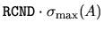

The conventional error analysis of linear least squares problems goes
as follows.
As above, let  be the solution to minimizing
computed by
LAPACK using one of the least squares drivers
xGELS, xGELSX, xGELSY, xGELSS or xGELSD
(see subsection 2.3.2).
We discuss the most common case, where A is
overdetermined
(i.e., has more rows than columns) and has full rank
[16,25,55,67]:
be the solution to minimizing
computed by
LAPACK using one of the least squares drivers
xGELS, xGELSX, xGELSY, xGELSS or xGELSD
(see subsection 2.3.2).
We discuss the most common case, where A is
overdetermined
(i.e., has more rows than columns) and has full rank
[16,25,55,67]:
The computed solutionhas a small normwise backward error. In other words
, where E and f satisfy
and p(n) is a modestly growing function of n. We take p(n)=1 in the code fragments above. Let (approximated by 1/RCOND in the above code fragments), (= RNORM above), and (SINT = RNORM / BNORM above). Here,is the acute angle between the vectors and b. Then when
is small, the error is bounded by
where = COST and = TANT in the code fragments above.
We avoid overflow by making sure RCOND and COST are both at least
 EPSMCH, and by handling the case of a zero B matrix
separately (BNORM = 0).
EPSMCH, and by handling the case of a zero B matrix
separately (BNORM = 0).
may be computed directly from the singular values of A returned by xGELSS or xGELSD (as in the code fragment) or by xGESVD or xGESDD. It may also be approximated by using xTRCON following calls to xGELS, xGELSX or xGELSY. xTRCON estimates or instead of , but these can differ from by at most a factor of n.
If A is rank-deficient, xGELSS, xGELSD, xGELSY and xGELSX can be used to regularize the problem by treating all singular values less than a user-specified threshold ( ) as exactly zero. The number of singular values treated as nonzero is returned in RANK. See [16,55,67] for error bounds in this case, as well as [28] for the underdetermined case. The ability to deal with rank-deficient matrices is the principal attraction of these four drivers, which are more expensive than the simple driver xGELS.
The solution of the overdetermined,
full-rank problem may also be
characterized as the solution of the linear system of equations